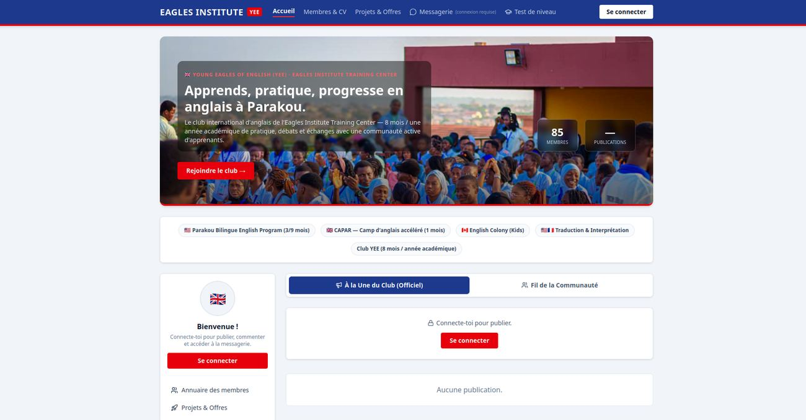
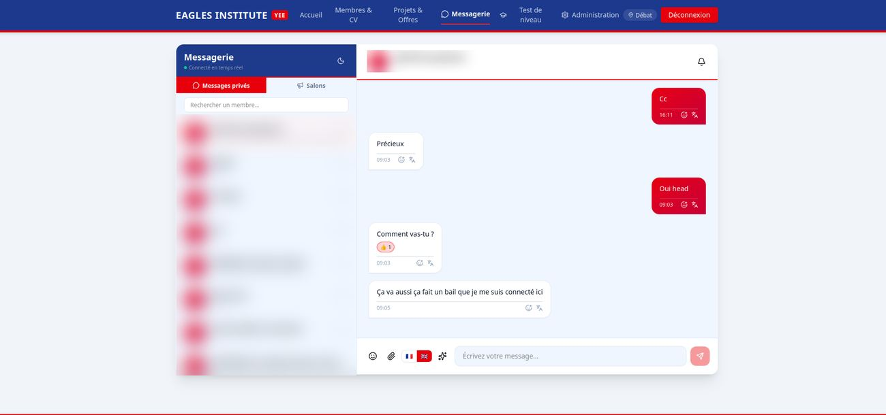
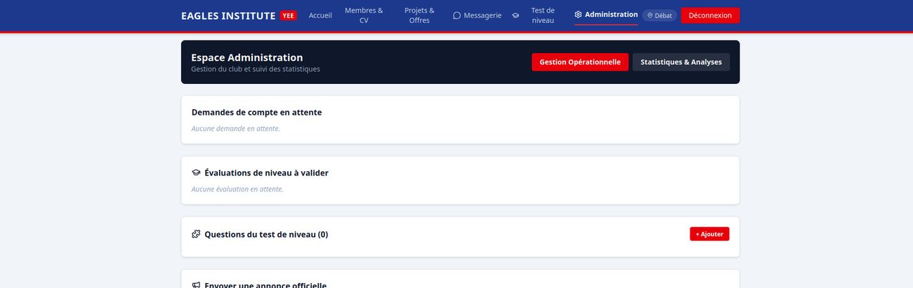

● En ligne
Club Anglais
Projet personnel · Développeur full stack
La plateforme du club d’anglais Young Eagles of English (Eagles Institute, Parakou) : publications, messagerie avec traduction intégrée, annuaire des membres, tableau de projets et administration. Plus de 85 membres inscrits.



1 / 3